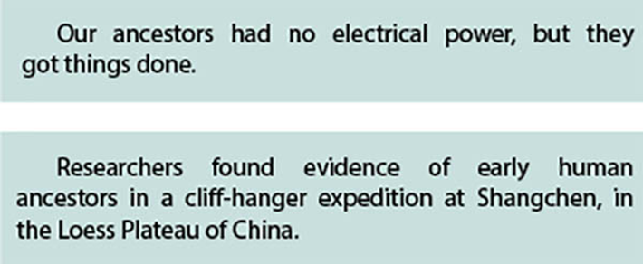
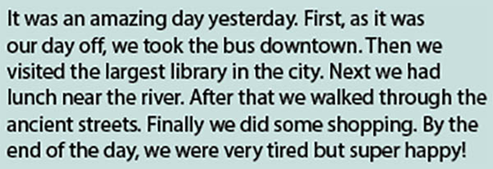
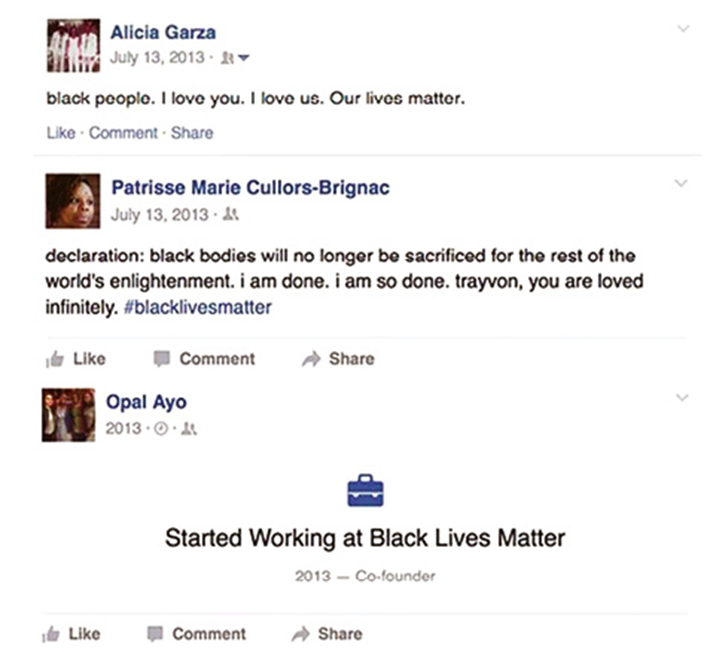
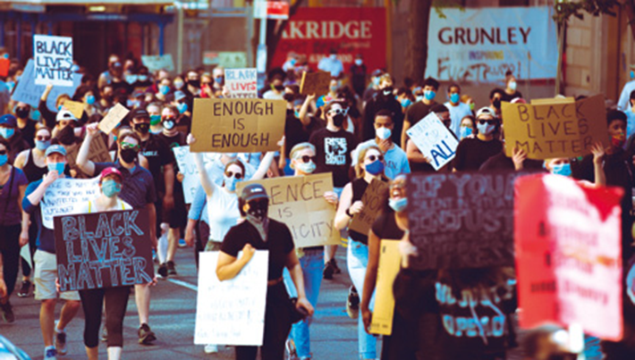
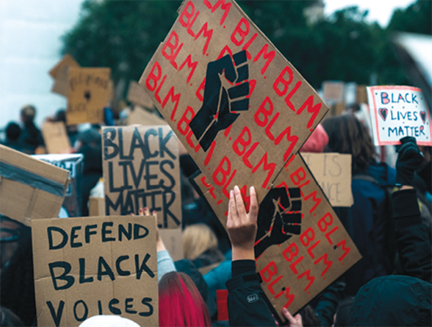

The influence of the past can be seen in many areas in our country: in couisine, cultural manifest, popular festivities and architecture.
Aneta_Gu/Shutterstock.com, Bricolage/Shutterstock.com,
Gergely Zsolnai/Shutterstock.com, Alf Ribeiro/Shutterstock.com
The impacts of the past are evident in Brazil, manifested through the diversity and abundance of cultural, social, economic and many other aspects of our current society. Such diversity has influenced a wide range of expressions, such as dance, music, religion, cooking and language, and these contributions affect our own lifestyle until today, as our ancestral culture is registered in our DNA and in our history.
Our country is recognized worldwide for our historical and cultural roots, but soccer is, without a doubt, one of the most striking reasons, even though it only dates back to the 19th century. Maybe you will be surprised to hear that we have inherited our most beloved passion from England. It is said that the Brazilian Charles Miller, who lived in Brazil with other English immigrants, brought the sport from a trip to Britain, in 1885.
Another example of the Brazilian cultural wealth is the roda de capoeira , which is considered an Intangible Cultural Heritage of Humanity by Unesco. Sometimes referred to as a martial art, other times as a dance, and yet other times as a game, capoeira is said to have been first created during the 16th century by people who were forced to leave West Africa to come to Brazil and work as slaves. It came to life as a survival tool, not only of self-defense, but also of cultural identity.
We could go on and on listing examples of how past behaviors and actions affect our lives, but what is important to acknowledge is that getting to know where we came from has not only historical but also moral value. Once we study our past, we tend to open our minds and exercise empathy, which prepares us to live more humanely and respectfully.
- How do the legacies of older generations influence our identities?
- How are you connected to the past? Mention at least one example of a past event, in your family or in human history, that influences your behavior or way of life.
- How can we be aware of past behaviors without building a vengeful society?
 Neste capítulo, serão abordadas as habilidades
EM13LGG301
,
EM13LGG402
,
EM13LGG403
.
Neste capítulo, serão abordadas as habilidades
EM13LGG301
,
EM13LGG402
,
EM13LGG403
.
Simple Past tense of irregular verbs
The irregular verbs do not follow the general rule of using - ed at the end of the word to make the Simple Past tense or the Past Participle form. This means the spellings may follow a different pattern. Take a look at the examples:
There are about 200 irregular verbs in English, and a good way to learn them is to study them in separated groups, as the similarities within each group will make it easier to remember them. Here are tables with the most common irregular verbs divided into four groups. Remember: for now, you will only need to know the Simple Past column.
| Verbs which have the same base form, Simple Past and Past Participle | ||
|---|---|---|
| Base form | Simple Past | Past Participle |
| cost | cost | cost |
| cut | cut | cut |
| hurt | hurt | hurt |
| let | let | let |
| put | put | put |
| Verbs which have the same Simple Past and Past Participle | ||
|---|---|---|
| Base form | Simple Past | Past Participle |
| bring | brought | brought |
| buy | bought | bought |
| catch | caught | caught |
| feel | felt | felt |
| find | found | found |
| get | got | got |
| have | had | had |
| hear | heard | heard |
| keep | kept | kept |
| lead | led | led |
| Verbs which have the same Simple Past and Past Participle | ||
|---|---|---|
| Base form | Simple Past | Past Participle |
| leave | left | left |
| lose | lost | lost |
| make | made | made |
| read - \ ‘ri:d \ | read - \ ‘red \ | read - \ ‘red \ |
| say | said | said |
| sell | sold | sold |
| send | sent | sent |
| shoot | shot | shot |
| teach | taught | taught |
| tell | told | told |
| think | thought | thought |
| win | won | won |
| Verbs which have the same base form and Past Participle | ||
|---|---|---|
| Base form | Simple Past | Past Participle |
| come | came | come |
| become | became | become |
| run | ran | run |
| Verbs which have a different base form, Simple Past and Past Participle | ||
|---|---|---|
| Base form | Simple Past | Past Participle |
| be | was/ were | been |
| begin | began | begun |
| blow | blew | blown |
| break | broke | broken |
| choose | chose | chosen |
| do | did | done |
| drink | drank | drunk |
| drive | drove | driven |
| eat | ate | eaten |
| fall | fell | fallen |
| give | gave | given |
| go | went | gone |
| know | knew | known |
| see | saw | seen |
| speak | spoke | spoken |
| Verbs which have a different base form, Simple Past and Past Participle | ||
|---|---|---|
| Base form | Simple Past | Past Participle |
| swim | swam | swum |
| take | took | taken |
| throw | threw | thrown |
| wake | woke | woken |
| write | wrote | written |
When we look back from a certain time in the past to tell what happened before, we use the Past Perfect tense . In other words, it is used when one action happened before another action in the past:
Both actions happened in the past, but we combine the sentences to explain which one happened before the other in time: first, John left the house, then, Mary rang the doorbell.
First, the family had breakfast. After that, they went to the zoo.
Adverbs of sequence
We use the Simple Past to talk about past events. And to help us do that in a more coherent and cohesive manner, we can use sequence adverbs. They describe a series of events in relation to one another and the order in which they occurred.
We can start the description of a past event using first , continue with then , next , afterwards , after that (in any order you like) and conclude with finally or last of all . Read the example:
Learning the verbs
Memorizing the list of irregular verbs may not be as effective as learning them. Here are some strategies to help you:
Grammaring
1
Read the text and fill in the blanks with the verbs in the chart in the Simple Past tense. You may need to repeat some verbs more than once.
be – symbolize – lead – find – shoot – agree – shock stand – change – show – devastate hasten – have – give – estimate – bring
Events that devastated the world
August 6, 1945
The US atomic bombs of 1945 _______ the cities of Hiroshima and Nagasaki. The devastation finally _______ the Japanese to surrender, bringing to an end a fierce and costly Pacific war. The surrender of Japan _______ at one time seen unthinkable. But the atomic bomb _______ the Japanese surrender. The atomic bomb implications beyond just the end of the Second World War. It _______ the world the potential devastation a third world war could cause. Even now the legacy of Hiroshima and the threat of nuclear war hangs over the world. [...]
15 August 1947
India had stood as the crowning jewel in the crown of the British Empire. It _______ the second most populous nation in the world. After many years denying Indian calls for independence, Britain finally _______ to full Indian independence in 1947. Indian independence _______ accompanied by a painful separation and the birth of a new nation – Pakistan. The separation _______ to painful incidences of sectarian violence and killing; it to the migration of many millions of people who _______ themselves on the wrong side of the border. [...]
November 9, 1989
For decades, the Berlin wall _______ as a symbol of the ‘Iron Curtain’ splitting West and Eastern Europe. On the one side Communist authoritarian states, on the other side liberal democracies. The _______ wall built to prevent East Germans escaping into West Germany, and indeed many _______ trying to escape. But, more than anything else its presence _______ symbolic. The fall of the Berlin wall _______ an iconic moment when the Soviet Union _______ up its grip on Eastern Europe. [...]
11th September 2001
The US _______ sporadic terrorist attacks before. But the sheer audacity and scale of these terrorist attacks _______ the US and the world. The loss of life was _______ at just under 3,000. The event _______ American foreign policy. It _______ a motivating factor behind the controversial invasion of Iraq and _______ to a “war on terror” _______ by Guantanamo Bay and a debate over the justification of torture.
PETTINGER, Tejvan. “Events that changed the world”. Biography Online , April 11th, 2012. Available at <www.biographyonline.net /events/changed-world.html>. Accessed on July 12th, 2021.
2
Write T (true) or F (false) for the statements and correct the false ones.
( ) The Hiroshima and Nagasaki bombs led to the end of World War I.
( ) India became independent from the British Empire through a pacific and smooth process.
( ) The Berlin Wall was only symbolic.
3
Choose the correct tense: Simple Past or Past Perfect:
- The wind _______ away the trash that we _______ . (blow / collect)
- Albert _______ away the poem that he _______. (throw / write)
- Sarah and Ralph _______ me the photographs they _______ during their vacation. (send / take)
- In the evening, the children _______ their parents what they _______ at the school field trip. (tell / see)
- The monitor _______ very sorry for what she _______. (be / do)
4
Complete the spaces with the correct adverbs of sequence, using first, next, then, or finally.
- If you want to pass your exams, you must study very hard _______.
- Suzy went to school and _______ to her piano lesson.
- Mona _______ finished the Science project last week.
- When you prepare a salad, you should wash the vegetables _______.
- Joyce was sick for a week before she _______ went to the doctor.
- Trisha and her fiancé travel a lot. They don’t know where to go _______.
Black lives matter
When was the first time you heard the words “Black Lives Matter”?
Alicia Garza, Patrisse Cullors and Opal Tometi created the movement Black Lives Matter, after the 17-year-old Trayvon Martin’s murder by the officer George Zimmerman in 2012, Florida. The jury decided he was not guilty after he declared he shot the teenager in self-defense in 2013.
After that, a new movement had arisen in social medias, the Black Lives Matter (BLM) was getting strong as messages to remember black people their worth were being shared among the internet users. The power of hashtag was important to spread those messages and to get more people involved in this movement.
Patrisse Cullors, Alicia Garza and Opal Tometi, co-founders of Black Lives Matter.
Jemal Countess / GETTY IMAGES NORTH AMERICA / Getty Images via AFP
Alicia, Patrisse and Opal Facebook post on July 13rd, 2013.
Reprodução/Black Lives Matter
In 2020, George Floyd was murdered by the officer Derek Chauvin in Minneapolis, and it was recorded, and the whole world watched Floyd saying he couldn’t breathe while Chauvin placed his knee on
Floyd’s neck. The hashtag #blacklivesmatter could be read in all social medias and thousands of people of different countries went to street to protest against racism and police violence. Chauvin was found guilty and was sentenced to 22.5 years for the murder of George Floyd.
Justice for George Floyd protest, Washington D.C. (USA), May, 31st, 2020.
Johnny Silvercloud/Shutterstock.com
Black Lives Matter protest in London (UK), June 6th, 2020.
trevorwk/Shutterstock.com
Hashtag “Vidas pretas importam” written on Paulista Avenue, in São Paulo, Brazil, November 21st, 2020.
Videos/Shutterstock.com
5
Observe the picture below and the text on it. Then answer the questions.
Autor desconhecido/Coleção particular
- What do you understand by the quote “White Privilege is your history being part of the core curriculum and mine being taught as an elective”?
- In your opinion, there is a “White privilege” in society nowadays?
- If you answered yes to question b, explain it: how this white privilege affects black people?
6
Search about Black Lives Matter news on different websites. After reading at least three different articles about it, write a paragraph of your own to explain why BLM is important to the community and what impacts it can have on the future.
How would you define the term “hashtag activism”? Do you think this kind of activism is important to social causes? What makes you say that? Discuss it in pairs.
When we read, we learn more about a subject, and we can have more arguments to talk about it.
Angela Davis wrote about an analysis of gender, race and class that covers history from the slave trade and abolitionism movements to the women’s liberation movements in the beginning of 1960s.
Djammilla Ribeiro is a Brazilian teacher who wrote about the connection of slavery and racism that we face in Brazil.
The revolutionary ideas of Malcolm X are in this book. It also analyses the history of Black People and the problem of Civil Rights in America.
Talking about the past
Get together with a classmate. Ask and answer questions about him/her. Use your imagination and the correct form of the verbs in the past. We should all celebrate the diversity of experiences of people around us. Some topics could be:
Qvasimodo art/Shutterstock.com
1
EEAR-SP 2016 Select the alternative that best completes the dialogue below.
Jude: I ________(see) Mary last Sunday.
John: Really? I ________(not/see) her for years. How is she?
- saw – haven’t see
- saw – haven’t seen
- have seen – didn’t see
- have seen – haven’t seen
2
Col. Naval-RJ 2016 Which is the correct way to complete the text below?
You can now edit and format your Google Docs by voice
About six months ago, Google _______ voice typing for Google Docs on the web _______ you to dictate your text into a document. Today it’s taking this feature a step further by also allowing you to edit and format your text by voice, too.
This _______ you can now say things like “select all”, “align center”, “bold”, “got to end of line”, or “increase font size” and Google Docs _______ and follow your commands. You can find a full list of available commands here [...].
(http://techcrunch.com/2016/02/24/you-can-now-edit-and-format-your-google-docs-by-voice/)
- has introduced – to allow – means – understanding
- introduces – allowed – meant – has understood
- has introduced – to allow – is meaning – understood
- introduced – to allow – means – will understand
- introduced – allowed – meant – understand
3
Unesp 2021 Examine a anedota publicada pela comunidade “The Language Nerds” em sua conta no Facebook em 22.01.2020.
A anedota sugere que
- o segundo homem tomou, por engano, a bebida do primeiro.
- o funcionário do bar serviu a mesma bebida para os dois homens.
- o primeiro homem envenenou o segundo.
- o segundo homem pretendia envenenar o primeiro.
- o segundo homem ingeriu um líquido tóxico em lugar de água.